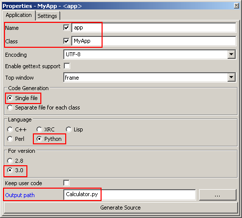
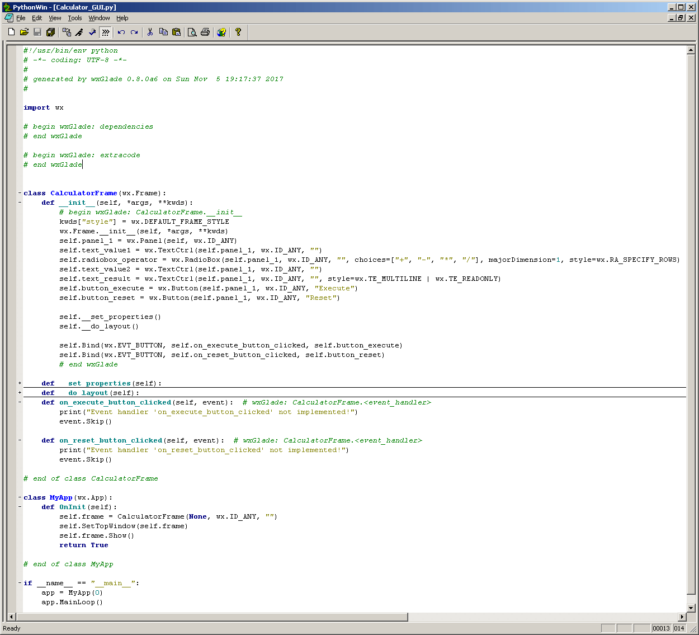
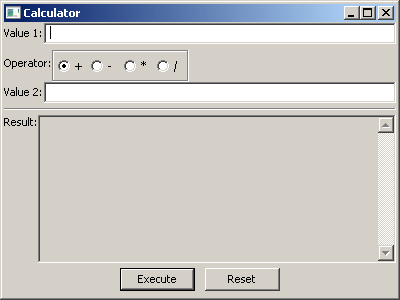
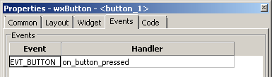
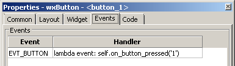
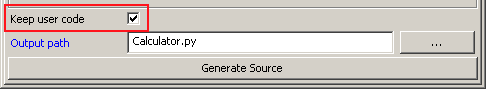
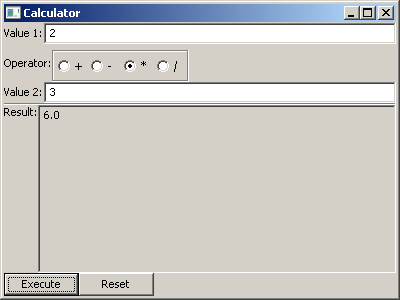
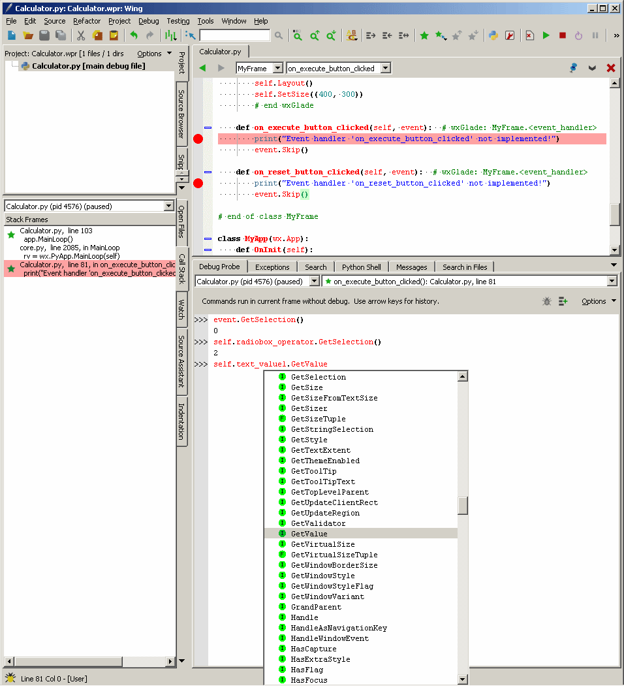
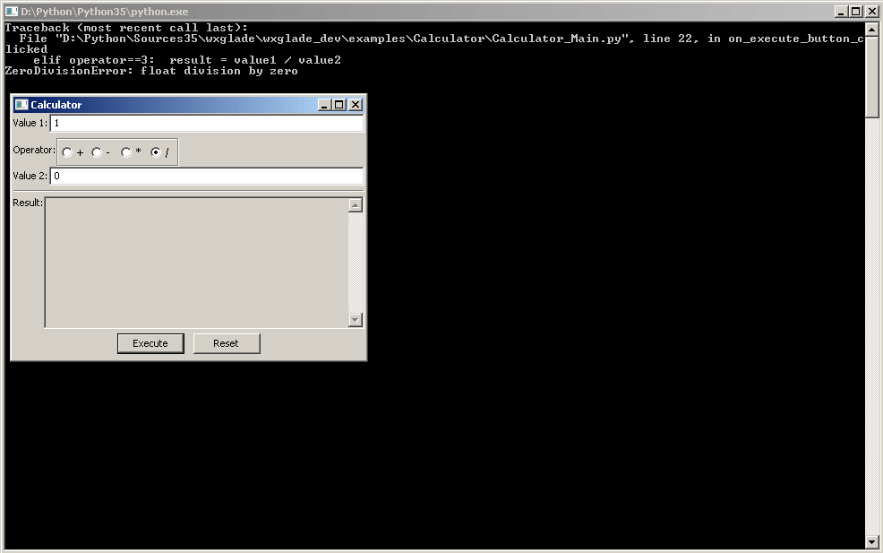

Create and Use Source Code¶
The main purpose of wxGlade is to create code which will create the required windows.
In addition, empty handlers for the most common events can be generated.
The examples on this page are for Python, but the other supported languages will work similar.
Prerequisites and Code Generation¶
The options for code generation can be defined in the Properties notebook when the application object is selected in the Tree view:
For our example project from the previous page ‘Tutorial’ we want to generate:
- Python code for wxWidgets 3.0 or Phoenix
- all code in a single file
- output file name “Calculator_GUI.py”
- an application should be created, not just the window
So we select the root element “Application” in the Tree view and set the properties accordingly:
|  |
To actually create the source code, press the button “Generate Source” or hit Ctrl-G.
The generated source looks like this (some lines removed at the red lines):
|  |
In this screenshot some parts were folded where the controls are created and placed in sizers. Especially for learning wxPython you may have a look at this code.
Application, Toplevel Windows¶
A wxGlade project may contain any number of toplevel frames or dialogs. Code will be generated for each of these.
By default, also boilerplate code for a basic application will be created.
The Properties could look like these:
The toplevel window will be invoked from the generated application code:
class MyApp(wx.App):
def OnInit(self):
self.frame = CalculatorFrame(None, wx.ID_ANY, "")
self.SetTopWindow(self.frame)
self.frame.Show()
return True
if __name__ == "__main__":
app = MyApp(0)
app.MainLoop()
In the example code, you should be able to identify the uses of app, Myapp, frame and CalculatorFrame.
If Application -> Name and Application -> Class are deactivated, no application code will be generated. Usually you want to implement the application yourself, but still you can use the generated code as starting point.
The other, non-toplevel windows are usually called from your own code. Have a look at the generated code to see how to call them.
Be aware that you need to use different class names for your toplevel windows. wxGlade will display the class name with a yellow background if it’s not unique.
Code for Windows¶
This is the full Python code for our main window CalculatorFrame:
class CalculatorFrame(wx.Frame):
def __init__(self, *args, **kwds):
# begin wxGlade: CalculatorFrame.__init__
kwds["style"] = kwds.get("style", 0) | wx.DEFAULT_FRAME_STYLE
wx.Frame.__init__(self, *args, **kwds)
self.SetSize((400, 300))
self.SetTitle("Calculator")
self.notebook_1 = wx.Notebook(self, wx.ID_ANY)
self.notebook_1_pane_1 = wx.Panel(self.notebook_1, wx.ID_ANY)
self.notebook_1.AddPage(self.notebook_1_pane_1, "Calculate")
sizer_1 = wx.BoxSizer(wx.VERTICAL)
grid_sizer_1 = wx.FlexGridSizer(4, 2, 0, 0)
sizer_1.Add(grid_sizer_1, 1, wx.EXPAND, 0)
label_1 = wx.StaticText(self.notebook_1_pane_1, wx.ID_ANY, "Value 1:")
grid_sizer_1.Add(label_1, 0, wx.ALIGN_CENTER_VERTICAL, 0)
self.text_value1 = wx.TextCtrl(self.notebook_1_pane_1, wx.ID_ANY, "")
grid_sizer_1.Add(self.text_value1, 1, wx.EXPAND, 0)
label_4 = wx.StaticText(self.notebook_1_pane_1, wx.ID_ANY, "Operator:")
grid_sizer_1.Add(label_4, 0, wx.ALIGN_CENTER_VERTICAL, 0)
self.radiobox_operator = wx.RadioBox(self.notebook_1_pane_1, wx.ID_ANY, "", choices=["+", "-", "*", "/"], majorDimension=1, style=wx.RA_SPECIFY_ROWS)
self.radiobox_operator.SetSelection(0)
grid_sizer_1.Add(self.radiobox_operator, 0, wx.ALIGN_CENTER_VERTICAL, 0)
label_2 = wx.StaticText(self.notebook_1_pane_1, wx.ID_ANY, "Value 2:")
grid_sizer_1.Add(label_2, 0, wx.ALIGN_CENTER_VERTICAL, 0)
self.text_value2 = wx.TextCtrl(self.notebook_1_pane_1, wx.ID_ANY, "")
grid_sizer_1.Add(self.text_value2, 1, wx.EXPAND, 0)
label_3 = wx.StaticText(self.notebook_1_pane_1, wx.ID_ANY, "Result:")
grid_sizer_1.Add(label_3, 0, 0, 0)
self.text_result = wx.TextCtrl(self.notebook_1_pane_1, wx.ID_ANY, "")
self.text_result.SetBackgroundColour(wx.Colour(212, 208, 200))
grid_sizer_1.Add(self.text_result, 1, wx.EXPAND, 0)
sizer_6 = wx.BoxSizer(wx.HORIZONTAL)
sizer_1.Add(sizer_6, 0, wx.ALIGN_CENTER_HORIZONTAL, 0)
self.button_execute = wx.Button(self.notebook_1_pane_1, wx.ID_ANY, "Execute")
self.button_execute.SetDefault()
sizer_6.Add(self.button_execute, 0, wx.ALL, 5)
self.button_reset = wx.Button(self.notebook_1_pane_1, wx.ID_ANY, "Reset")
sizer_6.Add(self.button_reset, 0, wx.ALL, 5)
self.text_log = wx.TextCtrl(self.notebook_1, wx.ID_ANY, "1+1 = 2")
self.text_log.SetBackgroundColour(wx.Colour(212, 208, 200))
self.notebook_1.AddPage(self.text_log, "Log")
grid_sizer_1.AddGrowableRow(3)
grid_sizer_1.AddGrowableCol(1)
self.notebook_1_pane_1.SetSizer(sizer_1)
self.Layout()
# end wxGlade
When you run the Python file, the application is run and the frame created:
|  |
The code just creates the windows. There’s no functionality yet.
In the generated code you can see assignments like self.text_result = wx.TextCtrl(...).
This allows you to access the control via the attribute text_result.
You may e.g. call frame.text_result.SetValue(str(result)) to display a value in the Result text control.
Some widgets like StaticText are not accessible as attributes by default.
You can change this by going to Properties -> Widget and checking Store as attribute.
For sizers you can achieve the same on the “Common” tab.
As of now, nothing will happen if the user hits the “Execute” button. So we need an event handler for this.
Code for Event Handlers¶
Traditional programs or scripts usually have a defined flow.
GUI programs on the other hand, are event-driven and the flow depends on the user’s actions. The events like mouse clicks are delivered from the operating system or window manager to the application. The receiving side is an infinite loop, called “event loop” or “main loop”. When you have a look at the last lines of a Python file that wxGlade wrote, you will see that the MainLoop method of your application is called. The main loop receives events from e.g. the Windows operating sytem and dispatches it to windows and controls. To handle things like mouse clicks, menu selections, button clicks etc. you need to register handlers.
wxGlade allows you to enter handler names. For any of these names, empty method stubs will be generated in the source code file and the methods will be bound when the window is created. Alternatively, you may define and register handlers yourself.
Example: button event EVT_BUTTON
The main event of a button is EVT_BUTTON.
In the following example we want to call a method on_button_pressed whenever the button_1 is clicked.
Method 1: use wxGlade to create a handler method
In the Properties window you can see the events (most controls have more than just one event) and enter the handler name:
|  |
The generated code will look like this:
def __init__(self, *args, **kwds):
...
self.button_1 = wx.Button(self.panel_1, wx.ID_ANY, "1")
...
self.Bind(wx.EVT_BUTTON, self.on_button_pressed, self.execute_button)
def on_button_pressed(self, event): # wxGlade: MyFrame.<event_handler>
print("Event handler 'on_button_pressed' not implemented!")
event.Skip()
The default handler just prints a message to the console and calls event.Skip() to forward the event to the the parent of the button.
Method 2 (Python only): enter a lambda function
If you’re generating Python code, then you may enter an anonymous lambda function as handler.
In the example, the method on_button_pressed should be called back with the argument 1.
E.g. if you have a keypad of buttons 0 to 9 then you might prefer to handle the events like this to keep
your business logic in the handler free from GUI related code.
|  |
The generated code will look like this:
def __init__(self, *args, **kwds):
...
self.button_1 = wx.Button(self.panel_1, wx.ID_ANY, "1")
....
self.Bind(wx.EVT_BUTTON, lambda event: self.on_button_pressed('1'), self.button_1)
For anything non-trivial, the above ‘Method 1’ is recommended.
Method 3: register event handler
Alternatively, you can also register an event handler yourself, using code like this:
self.execute_button.Bind(wx.EVT_BUTTON, self.on_execute_button_clicked)
wxGlade will only help you with the most important events, e.g. for the button it will just offer to generate a handler for EVT_BUTTON. You may want to register and handle other events like mouse movements as well.
User Code: Implement Functionality¶
- There are two ways to implement functionality for your application:
- Directly edit the code file(s) written by wxGlade.
- Import the generated module(s) and override class and event handler in your own code files.
For anything else than simple glue code, the latter is the recommended approach.
Example 1: Edit in place / “Keep user code”¶
If you want to use the first approach, you need to set Keep user code for the application in the Properties notebook:
|  |
In this case, when you hit the “Generate Source” button, wxGlade will read the file and only overwrite the sections that were marked with # begin wxGlade:... and # end wxGlade.
Please be aware that this is not too robust when you e.g. rename objects. Always keep backups!
Event handlers are marked with # wxGlade: MyFrame.<event_handler>.
They will be read and written back unchanged. Don’t modify the marker.
To implement functionality, replace the default handler, e.g.:
def on_execute_button_clicked(self, event): # wxGlade: MyFrame.<event_handler>
print("Event handler 'on_execute_button_clicked' not implemented!")
event.Skip()
with your own code like this (of course you should add also validation and error reporting):
def on_execute_button_clicked(self, event): # wxGlade: MyFrame.<event_handler>
value1 = float( self.text_value1.GetValue() )
value2 = float( self.text_value2.GetValue() )
operator = self.radiobox_operator.GetSelection() # a number from 0 to 3
if operator==0: result = value1 + value2
elif operator==1: result = value1 - value2
elif operator==2: result = value1 * value2
elif operator==3: result = value1 / value2
self.text_result.AppendText("%s\n"%result)
event.Skip()
The result:
|  |
- The files can be found in the folder
wxglade/examples/Calculator: - In these files, the event handlers for the two buttons are defined in Properties -> Events -> EVT_BUTTON:
- on_execute_button_clicked
- on_reset_button_clicked
Please be aware that this example code is far far away from any good coding style. Please do better in your own code!
- It would be good practice to:
- separate the business logic from the user interface by implementing e.g. methods like
validate_value(value),
calculate(value1, operator, value2) - validate the contents of
text_value1/2on every change of content (EVT_TEXT) - report failed validation by colorizing the controls
- catch and log exceptions like
ZeroDivisionError
- separate the business logic from the user interface by implementing e.g. methods like
Example 2: Import and override¶
To actually use the generated event handler code and extend it with the required functionality, it’s best to
create another Python file, import the generated code and use app / MyApp as template.
For example, set wxGlade output file name to Calculator_GUI.py and let it generate the GUI code.
Now create a file Calculator_Main.py where you can import and use the Calculator_GUI module:
#!/usr/bin/env python
# -*- coding: UTF-8 -*-
import wx
from Calculator_GUI import CalculatorFrame
class MyFrame(CalculatorFrame):
def __init__(self, *args, **kwds):
CalculatorFrame.__init__(self, *args, **kwds)
# if required, insert more initialization code here and create data structures
def on_execute_button_clicked(self, event):
# XXX add validation and error reporting!
value1 = float( self.text_value1.GetValue() )
value2 = float( self.text_value2.GetValue() )
operator = self.radiobox_operator.GetSelection() # a number from 0 to 3
if operator==0: result = value1 + value2
elif operator==1: result = value1 - value2
elif operator==2: result = value1 * value2
elif operator==3: result = value1 / value2
self.text_result.AppendText("%s\n"%result)
event.Skip()
def on_reset_button_clicked(self, event):
self.text_result.Clear()
event.Skip()
class MyApp(wx.App):
def OnInit(self):
self.frame = MyFrame(None, wx.ID_ANY, "")
self.SetTopWindow(self.frame)
self.frame.Show()
return True
if __name__ == "__main__":
app = MyApp(0)
app.MainLoop()
- The files can be found in the folder
wxglade/examples/Calculator:
Additionally, these files demonstrate a menu bar which will be explained in the next section Menu, Status Bar, Tool Bar.
Hints and Tips¶
Note
Implementing event handlers is easiest if you use an IDE with a debugger, like Wing IDE Professional.
Just set a breakpoint at the event handler and the introspection features and code completion will
save you a lot of time:
|  |
Note
During development, you should always run your program from or within a console window.
This way you will see if there are any exceptions being reported at stderr:
|  |

{kind=link}
{kind=link}
{kind=link}
{kind=link}
{kind=link}
{kind=link}
{kind=link}
{kind=link}
{kind=link}